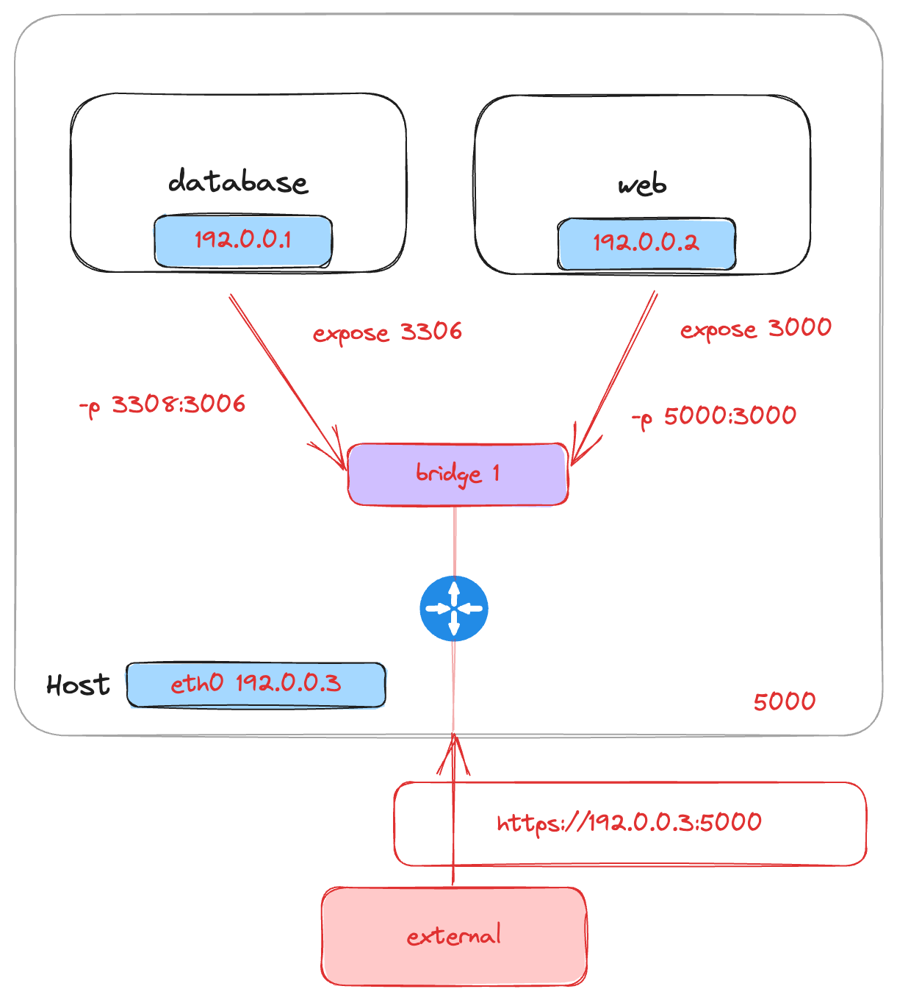

Docker expose and publish command
Yesterday, I got stuck when trying to write a docker compose file of several services including redis, mysql and web services. The log of all web services showed that they couldn't connect to mysql database, after trying debugging and reading documentation, I've found that I misunderstood the usage of expose and publish command in dockerfile and docker-compose file. So I write this post to explain how expose and publish command work.
Docker network
In the scope of this post, I would only mention docker bridge network mode. Let's cite the definition from oficial documentation first:
A bridge network uses a software bridge which allows containers connected to the same bridge network to communicate, while providing isolation from containers which are not connected to that bridge network. The Docker bridge driver automatically installs rules in the host machine so that containers on different bridge networks cannot communicate directly with each other.
In the above definition, you could easily see the function of this network driver: allows containers connected to the same bridge network to communicate, so basically you can commiunicate with others container through container name and port. This driver is the default one when you don't specify the driver of container.
$ docker network ls --filter "name=bridge"
NETWORK ID NAME DRIVER SCOPE
4064fdbdf055 bridge bridge local
Expose
The expose is just an instruction from the author of dockerfile for whom intends to use the image built from the dockerfile, it doens't actually publish the port of container.
Publish
Firstly, please see the below image for docker network.

If we don't public ports, we cannot access the container through the outside, like typing https://127.0.0.1/path in search bar of web browser of host machine. We could do this through -p option when running docker, or through port mapping of docker compose.
Example:
$ docker run -p 5000:3000 --name signalling --rm signalling:1.0
signal_server_1: &signal_server_1
container_name: signal_server_1
build:
context: ./../signalling
ports:
- "5000:3000"
restart: always
depends_on:
- matchmaker
- redis
Behind the scenes, docker do all the things for us like creating the necessary Linux bridges, virtual network interface, ip table rules, routing,...
Now, you can access the container through port 5000, but do you see the difference of boundary in the above image?
Port 5000 is the mapping between the host manchine and docker, could I use this port to connect web container from database container? The answer is no, we cannot do something like
curl https://web_container:5000
from inside the database container. This is also the thing I want to focus in this post. We can only access the web container through port 3000 because these two container are in the same network.